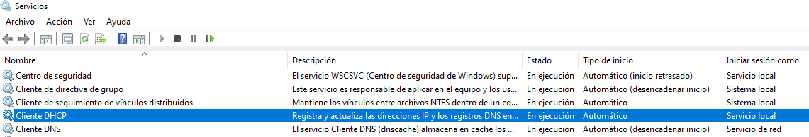

DHCP SERVER
WINDOWS
ÍNDICE
SERVIDOR DHCP CON WINDOWS POWERSHELL
Como ya sabemos, un servidor DHCP proporciona IP a los equipos de una red que están configurados para ello. El servidor DHCP, además de proporcionar una IP, ofrece otros parámetros necesarios para garantizar la conectividad interna y externa de los equipos de la red.
A continuación se muestran una serie de comandos relativos a la administración del servidor DHCP.
COMANDOS DE INSTALACIÓN Y CONFIGURACIÓN
Install-WindowsFeature DHCP [-IncludeManagementTools]
Instalar la característica o rol de servidor DHCP. Con la opción IncludeManagementTools se instalan herramientas adicionales como la consola de administración de Microsoft para el servicio DHCP (dhcpmgmt.msc) que nos permite administrar el servicio gráficamente de manera muy intuitiva.
Instalación del servidor DHCP
Instalar el rol de servidor DHCP sin herramientas de administración.
PS C:\> Install-WindowsFeature DHCP -IncludeManagementTools
Add-DhcpServerv4Scope [-<opcio1> <valor1>] [-<opcio2> <valor2>] ...
Agrega un ámbito IPv4 al servidor DHCP con las opciones especificadas. Las opciones habituales son las siguientes:
- Name: Nombre del ámbito.
- Description: Breve descripción del ámbito.
- StartRange: Especifica la dirección IP inicial del rango en la red desde la cual el servidor DHCP debe conceder las direcciones IP.
- EndRange: Especifica la dirección IP final del rango en la red desde la cual el servidor DHCP debe conceder las direcciones IP.
- Subnetmask: Máscara de red en notación decimal separada por puntos.
- LeaseDuration: Es el tiempo de concesión de una dirección IP. Especifica el intervalo de tiempo durante el cual se debe conceder una dirección IP a un cliente en este ámbito. Esto debe especificarse con el formato días.horas:minutos:segundos.
- State: Especifica el estado del ámbito cuando se crea. Los valores aceptables para este parámetro son: Active (activo) e Inactive (inactivo). Solo un ámbito activo responde a las solicitudes de los clientes. El valor predeterminado es Active.
Creación de ámbito DHCP
Crear un ámbito para un servidor DHCP con las siguientes características:
- Nombre: Ámbito 1
- Descripción: Ámbito DHCP correspondiente a la red 192.168.1.0/24.
- Rango de IPs: Se asignarán IPs entre la 192.168.1.128 y la 192.168.1.254.
- Tiempo de concesión: 6 horas.
PS C:\> Add-DhcpServerv4Scope `
-Name "Ámbito 1" `
-Description "Ámbito DHCP correspondiente a la red 192.168.1.0/24." `
-StartRange 192.168.1.128 `
-EndRange 192.168.1.254 `
-SubnetMask 255.255.255.0 `
-LeaseDuration 0.06:00:00
Add-DhcpServerv4ExclusionRange -ScopeId <id de ámbito> -StartRange <ipinicial> -EndRange <ipfinal>
Agrega un rango de exclusión de direcciones IP para un ámbito IPv4. Las direcciones IP excluidas no son asignadas por el servidor DHCP a ningún cliente que solicite una IP. La única excepción a esto es la reserva. Si se reserva una dirección IP, la misma dirección IP se concede al cliente designado incluso si se encuentra en el rango de exclusión. El parámetro ScopeId es el identificador del ámbito y StartRange y EndRange son las IP donde comienza y termina el rango de exclusión respectivamente.
Rangos de exclusión
Agregar un rango de exclusión para el ámbito del ejemplo anterior que va desde la IP 192.168.1.192 hasta la 192.168.1.224.
PS C:\> Add-DhcpServerv4ExclusionRange -ScopeId 192.168.1.0 `
-StartRange 192.168.1.192 -EndRange 192.168.1.224
Add-DhcpServerv4Reservation -ScopeId <id-ambito> [-<opcion1> valor1] [-<opcion2> valor2] ...
Agrega una reserva de IP para un equipo en un ámbito dado. Se debe especificar la dirección MAC del equipo del que queremos hacer la reserva y la IP que queremos asignarle. Las opciones más habituales son:
- Name: Nombre que le damos a la reserva.
- IPAddress: Dirección IP que le asignaremos al equipo.
- ClientId: Dirección MAC del equipo al que queremos hacer la reserva.
- Description: Texto descriptivo relativo a la reserva que estamos creando.
Reserva de direcciones IP
Agregar una reserva para la impresora cuya dirección MAC es 08-00-27-13-31-75. La impresora siempre recibirá la IP 192.168.1.191, el nombre será "Reserva impresora" y la descripción "Reserva de IP para la impresora de la red 192.168.1.0/24".
PS C:\> Add-DhcpServerv4Reservation -ScopeId 192.168.1.0 -IPAddress 192.168.1.191 `
-ClientId "08-00-27-13-31-75" -Name "Reserva impresora" `
-Description "Reserva de IP para la impresora de la red 192.168.1.0/24"
COMANDOS PARA MOSTRAR LA CONFIGURACIÓN
Get-DhcpServerv4Scope [-ScopeId <id-ambito>]
Muestra la configuración del ámbito dado. Si no se especifica el parámetro ScopeId, se devuelven todos los ámbitos configurados en el servidor DHCP.
Mostrar configuración de un ámbito (lista)
Muestra la configuración del ámbito con id 192.168.1.0 en formato de lista.
PS C:\> Get-DhcpServerv4Scope -ScopeId 192.168.1.0 | Format-List
ScopeId : 192.168.1.0
Name : Ámbito 1
Description : Ámbito DHCP correspondiente a la red 192.168.1.0/24
SuperscopeName :
SubnetMask : 255.255.255.0
StartRange : 192.168.1.128
EndRange : 192.168.1.254
LeaseDuration : 06:00:00
NapProfile :
NapEnable : False
Delay(ms) : 0
State : Active
Type : Dhcp
MaxBootpClients : 4294967295
ActivatePolicies : True
Mostrar configuración de un ámbito (tabla)
Muestra la configuración del ámbito con id 192.168.1.0 en formato de tabla. La opción Autosize ajusta los valores para que no se recorten en pantalla.
PS C:\> Get-DhcpServerv4Scope -ScopeId 192.168.1.0 | Format-Table -AutoSize
ScopeId SubnetMask Name State StartRange EndRange LeaseDuration
------- ---------- ---- ----- ---------- -------- -------------
192.168.1.0 255.255.255.0 Ámbito 1 Active 192.168.1.128 192.168.1.254 06:00:00
Get-DhcpServerv4OptionValue [-ScopeId <id-ambito> | -ReservedIP <ip-reserva>]
Devuelve los valores opcionales que se proporcionan a los clientes DHCP para un ámbito dado cuando se proporciona el parámetro ScopeId. Si no se especifica el parámetro ScopeId el comando devuelve los valores opcionales para todos los ámbitos definidos y si se especifica el parámetro ReservedIP se proporcionan los valores opcionales para la reserva indicada. Cada opción tiene un identificador asociado, por ejemplo la opción Router tiene el identificador de valor 3.
Parámetros opcionales
Muestra todos los parámetros opcionales dados a los clientes DHCP para el ámbito 192.168.1.0.
PS C:\> Get-DhcpServerv4OptionValue -ScopeId 192.168.1.0 | Format-Table -AutoSize
OptionId Name Type Value VendorClass UserClass PolicyName
-------- ---- ---- ----- ----------- --------- ----------
3 Enrutador IPv4Address {192.168.1.254}
6 Servidores DNS IPv4Address {10.100.1.3, 8.8.8.8}
51 Concesión DWord {43200}
Get-DhcpServerv4Lease [-ScopeId <id-ambito>]
Devuelve el tiempo de todas las concesiones en un ámbito dado. Si no se especifica el ámbito se devuelve el tiempo de todas las concesiones de todos los ámbitos definidos en el servidor.
Concesiones
Mostrar todas las concesiones hechas en el ámbito 192.168.1.0.
PS C:\> Get-DhcpServerv4Lease -ScopeId 192.168.1.0
IPAddress ScopeId ClientId HostName AddressState LeaseExpiryTime
--------- ------- -------- -------- ------------ ---------------
192.168.1.128 192.168.1.0 08-00-27-c7-0d-23 X1-W10 Active 02/11/2023 3:28:30
192.168.1.191 192.168.1.0 08-00-27-13-31-75 Reserva impresora InactiveReservation
Aparece la concesión hecha por un cliente Windows 10 donde se indica que está activa y que expira en la fecha y hora indicada en el campo LeaseExpiryTime.
Por otro lado, aparece una concesión relativa a una reserva. No hay tiempo de expiración porque las reservas nunca caducan.
Get-DhcpServerv4ExclusionRange [-ScopeId <id-ambito>]
Devuelve los rangos de exclusión de un ámbito dado. Si no se especifica el ámbito se devuelven los rangos de exclusión de todas las concesiones de todos los ámbitos definidos en el servidor.
Rangos de exclusión
Mostrar todos los rangos de exclusión definidos en el ámbito 192.168.1.0.
PS C:> Get-DhcpServerv4ExclusionRange -ScopeId 192.168.1.0
ScopeId StartRange EndRange
------- ---------- --------
192.168.1.0 192.168.1.192 192.168.1.224
Get-DhcpServerv4Binding
Devuelve las IP de todos los adaptadores de red del servidor por los que sirve direcciones IP.
Get-DhcpServerv4Reservation [-<opcion1> <valor1>] [-<opcion2> <valor2>]...
Permite consultar las reservas por varios criterios. Algunas de las posibles opciones son:
- ScopeId: Especificamos el identificador de ámbito (es la IP de una de las interfaces de red del servidor).
- IPAddress: La IP de la que queremos consultar las reservas.
- ClientId: La MAC asociada a la reserva.
Si no se especifica ninguna opción devuelve todas las reservas hechas en todos los ámbitos.
Reservas
Mostrar todas las reservas hechas en el ámbito 192.168.1.0.
PS C:\> Get-DhcpServerv4Reservation -ScopeId 192.168.1.0
IPAddress ScopeId ClientId Name Type
--------- ------- -------- ---- ----
192.168.1.191 192.168.1.0 08-00-27-13-31-75 Reserva impresora Both
Se puede mostrar la información como lista ya que así aparece también el campo con la descripción.
PS C:\> Get-DhcpServerv4Reservation -ScopeId 192.168.1.0 | Format-List
IPAddress : 192.168.1.191
ClientId : 08-00-27-13-31-75
ScopeId : 192.168.1.0
Name : Reserva impresora
Type : Both
Description : Reserva de IP para la impresora de la red 192.168.1.0/24
COMANDOS PARA CAMBIAR LA CONFIGURACIÓN
Set-DhcpServerv4Scope -ScopeId <id-ambito> [-<opcion1> <valor1>] [-<opcion2> <valor2>]...
Establece las propiedades de un ámbito IPv4 existente en el servidor DHCP. Las opciones son las mismas que las del comando Add-DhcpServerv4Scope. Utilizando la opción State podemos activar o desactivar el ámbito con los valores Active e Inactive respectivamente.
Desactivar un ámbito
Desactivar el ámbito con id 192.168.1.0.
PS C:\> Set-DhcpServerv4Scope -ScopeId 192.168.1.0 -State Inactive
Set-DhcpServerv4OptionValue -ScopeId <id-ambito> [-<opcion1> valor1] [-<opcion2> valor2] ...
Cambia las propiedades opcionales de un ámbito IPv4 existente en el servidor DHCP. Las opciones son las mismas que las del comando Add-DhcpServerv4OptionValue. Este comando permite configurar una serie de opciones que el servidor DHCP proporcionará a los clientes. Entre las opciones posibles, las más habituales son:
- Router: Puerta de enlace proporcionada.
- DnsServer: Lista de servidores DNS (separados por comas) proporcionados.
- DnsDomain: Nombre de dominio DNS.
- WinsServer: Servidor WINS (resolución de nombres NetBios).
Configurar opciones de un ámbito
Configurar el ámbito 192.168.1.0 de un servidor DHCP para que se asigne a los clientes la puerta de enlace 192.168.1.1 y los DNS 192.168.1.3 y 8.8.8.8.
PS C:\> Set-DhcpServerv4OptionValue -ScopeId 192.168.1.0 `
-Router 192.168.1.1 -DnsServer 192.168.1.3,8.8.8.8
Set-DhcpServerv4OptionValue -ComputerName <ip-o-nombreDns> [-<opcion1> valor1] [-<opcion2> valor2] ...
En un servidor DHCP se puede definir más de un ámbito, con esta opción configuraremos las opciones que se aplicarán a todos los ámbitos definidos.
Set-DhcpServerv4OptionValue -ReservedIP <ip> [-<opcion1> valor1] [-<opcion2> valor2] ...
En este caso las opciones solo se aplican al equipo especificado del que hemos hecho una reserva.
Set-DhcpServerv4Reservation -IPAddress <ip-reserva> -ClientId <MAC-reserva> [-<opcion1> <valor1>] ...
Modifica la configuración de una reserva dada.
Set-DhcpServerv4Binding -BindingState <$true|$false> -InterfaceAlias <adaptador-red>
En el equipo donde tenemos el servidor DHCP podemos tener más de un adaptador de red. Con este comando especificamos si queremos que el servidor conceda direcciones a las peticiones que le llegan por un adaptador de red dado.
Desactivar concesión de direcciones en un adaptador
Desactivar la concesión de direcciones IP para el adaptador de red llamado “Ethernet 2”.
PS C:\> Set-DhcpServerv4Binding -BindingState $false -InterfaceAlias "Ethernet 2"
Comandos para eliminar la configuración
Remove-DhcpServerv4Scope -ScopeId <id-ambito>
Elimina un ámbito del servidor DHCP.
Remove-DhcpServerv4ExclusionRange -ScopeId <id-ambito> [-StartRange <inicio-rango> -EndRange <fin-rango>]
Elimina un rango de exclusión de un ámbito en el servidor DHCP. Si no se especifican los valores inicial y final del rango, entonces se eliminan todos los rangos de exclusión definidos en el ámbito.
Eliminar todos los rangos de exclusión
Eliminar todos los rangos de exclusión definidos en el ámbito 192.168.1.0.
PS C:\> Remove-DhcpServerv4ExclusionRange -ScopeId 192.168.1.0
Remove-DhcpServerv4OptionValue [-<nivel> <valor-nivel>] -OptionId <lista-identificadores-opcion>
Elimina las propiedades opcionales a nivel de ámbito (ScopeId), reserva (ReservedIP) o general. En la opción OptionId se proporciona una lista separada por comas con los identificadores de las propiedades opcionales.
Remove-DhcpServerv4Lease -ScopeId <id-ambito>
Elimina todas las concesiones hechas en un ámbito.
Remove-DhcpServerv4Lease -IPAddress <lista-ip>
Elimina todas las concesiones hechas para cada una de las IP's de la lista.
Remove-DhcpServerv4Reservation [-ScopeId <id-ambito> [-ClientId <MAC-cliente>] | -IPAddress <lista-ip>]
Este comando elimina la reserva IPv4 del ámbito especificado. Si se especifica el parámetro ScopeId, se eliminan todas las reservas del ámbito. Si se especifica el parámetro IPAddress o ClientId, se eliminan una o más reservas específicas identificadas por direcciones IP o identificadores de cliente.
Eliminar una reserva
Eliminar la reserva de la impresora con MAC 08-00-27-13-31-75.
PS C:\> Remove-DhcpServerv4Reservation -ScopeId 192.168.1.0 -ClientId "08-00-27-13-31-75"
Hay mucha más información sobre la administración de un servidor DHCP con Powershell en la documentación oficial de Microsoft.
URL: https://learn.microsoft.com/es-es/powershell/module/dhcpserver/?view=windowsserver2019-ps
CLIENTES DHCP EN SISTEMAS WINDOWS
En los sistemas Windows, el cliente DHCP funciona como un servicio del sistema operativo. Podemos gestionarlo desde la consola de administración de servicios (services.msc), donde aparece con el nombre corto Dhcp y el nombre completo Cliente DHCP.

Además, es posible consultar información sobre este servicio utilizando PowerShell o el comando sc en la consola cmd de Windows.
IPCONFIG
Para interactuar con el cliente DHCP y realizar acciones habituales, utilizaremos el comando ipconfig desde la línea de comandos (cmd). A continuación se muestran las principales acciones que se pueden realizar con este comando.
ipconfig /?
Muestra la ayuda del comando.
ipconfig /all
Muestra información detallada sobre todas las conexiones de red. Para cada adaptador, indica si la configuración dinámica mediante DHCP está activada y, en caso afirmativo, muestra la dirección IP del servidor DHCP, la fecha en que se concedió la dirección y la fecha de expiración de la concesión.
ipconfig /all
Mostrar los parámetros de la configuración IP de un cliente Windows 10, destacando aquellos relacionados con la asignación dinámica mediante DHCP.
C:\> ipconfig /all
Configuración IP de Windows
Nombre de host. . . . . . . . . : X1-W10
Sufijo DNS principal . . . . . :
Tipo de nodo. . . . . . . . . . : híbrido
Enrutamiento IP habilitado. . . : no
Proxy WINS habilitado . . . . . : no
Adaptador de Ethernet Ethernet:
Sufijo DNS específico para la conexión. . :
Descripción . . . . . . . . . . . . . . . : Intel(R) PRO/1000 MT Desktop Adapter
Dirección física. . . . . . . . . . . . . : 08-00-27-C7-0D-23
DHCP habilitado . . . . . . . . . . . . . : sí
Configuración automática habilitada . . . : sí
Vínculo: dirección IPv6 local . . . . . . : fe80::3ca9:1ae3:be0a:2cce%4(Preferido)
Dirección IPv4. . . . . . . . . . . . . . : 192.168.1.128(Preferido)
Máscara de subred . . . . . . . . . . . . : 255.255.255.0
Concesión obtenida. . . . . . . . . . . . : miércoles, 1 de noviembre de 2023 21:28:30
La concesión expira . . . . . . . . . . . : jueves, 2 de noviembre de 2023 3:28:30
Puerta de enlace predeterminada . . . . . : 192.168.1.1
Servidor DHCP . . . . . . . . . . . . . . : 192.168.1.2
IAID DHCPv6 . . . . . . . . . . . . . . . : 101187623
DUID de cliente DHCPv6. . . . . . . . . . : 00-01-00-01-2C-D1-9A-E1-08-00-27-C7-0D-23
Servidores DNS. . . . . . . . . . . . . . : 192.168.1.3
8.8.8.8
NetBIOS sobre TCP/IP. . . . . . . . . . . : habilitado
ipconfig /release [adaptador-red]
Libera la dirección IP asignada dinámicamente a un adaptador de red específico. Si no se indica ningún adaptador, se liberan las direcciones IP de todos los adaptadores de red que hayan recibido una IP de un servidor DHCP.
Liberar IP asignada dinámicamente
C:\> ipconfig /release
Configuración IP de Windows
Adaptador de Ethernet Ethernet:
Sufijo DNS específico para la conexión. . :
Vínculo: dirección IPv6 local . . . . . . : fe80::3ca9:1ae3:be0a:2cce%4
Puerta de enlace predeterminada . . . . . :
ipconfig /renew [adaptador-xarxa]
Renueva la dirección IP obtenida dinámicamente para un adaptador de red concreto. Si no se indica ningún adaptador, se renuevan las direcciones IP de todos los adaptadores de red que hayan recibido una IP dinámicamente. Solo se actualiza el tiempo de expiración de la concesión.
Renovación de IP
Muestra la información de la concesión en un equipo con Windows 10.
Espera unos 5 minutos, renueva la concesión y vuelve a mostrar la información de la concesión.
Información inicial de la concesión
C:\> ipconfig /all
Configuración IP de Windows
Nombre de host. . . . . . . . . : X1-W10
Sufijo DNS principal . . . . . :
Tipo de nodo. . . . . . . . . . : híbrido
Enrutamiento IP habilitado. . . : no
Proxy WINS habilitado . . . . . : no
Adaptador de Ethernet Ethernet:
Sufijo DNS específico para la conexión. . :
Descripción . . . . . . . . . . . . . . . : Intel(R) PRO/1000 MT Desktop Adapter
Dirección física. . . . . . . . . . . . . : 08-00-27-C7-0D-23
DHCP habilitado . . . . . . . . . . . . . : sí
Configuración automática habilitada . . . : sí
Vínculo: dirección IPv6 local . . . . . . : fe80::3ca9:1ae3:be0a:2cce%4(Preferido)
Dirección IPv4. . . . . . . . . . . . . . : 192.168.1.128(Preferido)
Máscara de subred . . . . . . . . . . . . : 255.255.255.0
Concesión obtenida. . . . . . . . . . . . : miércoles, 1 de noviembre de 2023 21:32:23
La concesión expira . . . . . . . . . . . : jueves, 2 de noviembre de 2023 3:32:23
Puerta de enlace predeterminada . . . . . : 192.168.1.1
Servidor DHCP . . . . . . . . . . . . . . : 192.168.1.2
IAID DHCPv6 . . . . . . . . . . . . . . . : 101187623
DUID de cliente DHCPv6. . . . . . . . . . : 00-01-00-01-2C-D1-9A-E1-08-00-27-C7-0D-23
Servidores DNS. . . . . . . . . . . . . . : 192.168.1.3
8.8.8.8
NetBIOS sobre TCP/IP. . . . . . . . . . . : habilitado
Renovación de IP tras esperar unos 5 minutos aproximadamente
C:\> ipconfig /renew
Configuración IP de Windows
Sufijo DNS específico para la conexión. . :
Vínculo: dirección IPv6 local . . . . . . : fe80::3ca9:1ae3:be0a:2cce%4
Dirección IPv4. . . . . . . . . . . . . . : 192.168.1.128
Máscara de subred . . . . . . . . . . . . : 255.255.255.0
Puerta de enlace predeterminada . . . . . : 192.168.1.1
Volver a mostrar la información de la concesión
C:\> ipconfig /all
Configuración IP de Windows
Nombre de host. . . . . . . . . : X1-W10
Sufijo DNS principal . . . . . :
Tipo de nodo. . . . . . . . . . : híbrido
Enrutamiento IP habilitado. . . : no
Proxy WINS habilitado . . . . . : no
Adaptador de Ethernet Ethernet:
Sufijo DNS específico para la conexión. . :
Descripción . . . . . . . . . . . . . . . : Intel(R) PRO/1000 MT Desktop Adapter
Dirección física. . . . . . . . . . . . . : 08-00-27-C7-0D-23
DHCP habilitado . . . . . . . . . . . . . : sí
Configuración automática habilitada . . . : sí
Vínculo: dirección IPv6 local . . . . . . : fe80::3ca9:1ae3:be0a:2cce%4(Preferido)
Dirección IPv4. . . . . . . . . . . . . . : 192.168.1.128(Preferido)
Máscara de subred . . . . . . . . . . . . : 255.255.255.0
Concesión obtenida. . . . . . . . . . . . : miércoles, 1 de noviembre de 2023 21:32:23
La concesión expira . . . . . . . . . . . : jueves, 2 de noviembre de 2023 3:38:00
Puerta de enlace predeterminada . . . . . : 192.168.1.1
Servidor DHCP . . . . . . . . . . . . . . : 192.168.1.2
IAID DHCPv6 . . . . . . . . . . . . . . . : 101187623
DUID de cliente DHCPv6. . . . . . . . . . : 00-01-00-01-2C-D1-9A-E1-08-00-27-C7-0D-23
Servidores DNS. . . . . . . . . . . . . . : 192.168.1.3
8.8.8.8
NetBIOS sobre TCP/IP. . . . . . . . . . . : habilitado
Observa que la fecha y hora en que se obtuvo la concesión no cambia tras realizar la renovación. Lo que sí varía es la fecha de expiración de la concesión, que se actualiza y ahora es unos 5 minutos posterior a la fecha de expiración que teníamos antes de renovar la IP.
REENVÍO DE PETICIONES DHCP: DHCP RELAY
- Instalar un servidor DHCP independiente en cada red donde se necesite el servicio.
- Instalar un único servidor DHCP en una red y, en las demás, configurar un agente reenviador DHCP (DHCP Relay Agent). Este agente se encarga de reenviar las solicitudes de dirección IP de los clientes de su red al servidor DHCP situado en otra red.
Por ejemplo, si disponemos de dos redes, con el servidor DHCP en la primera y el reenviador en la segunda, cuando un equipo de la segunda red solicita una dirección IP, la petición llega primero al reenviador. Este la reenvía, mediante un mensaje unicast, al servidor DHCP de la primera red, incluyendo la dirección MAC del cliente. El servidor DHCP asigna una dirección IP para ese equipo y la respuesta vuelve al reenviador, que finalmente la entrega al cliente. De este modo, el cliente recibe la respuesta como si hubiera sido atendido directamente por el servidor DHCP, sin saber que ha intervenido un agente reenviador.
Al igual que los servidores DHCP, el agente reenviador debe configurarse para funcionar en un adaptador de red concreto. Si el reenviador dispone de varios adaptadores, es necesario habilitar el reenvío en cada uno de los que conectan con redes desde las que se quieran reenviar peticiones DHCP.
Para instalar y configurar un reenviador de peticiones DHCP en un entorno sin interfaz gráfica, debes seguir dos pasos principales:
-
Instalar la característica de encaminamiento de Windows mediante PowerShell
Los pasos a seguir son:
- Instalar la característica de encaminamiento de Windows:
Install-WindowsFeature Routing [-IncludeManagementTools]- Instalar el componente de acceso remoto necesario para el encaminamiento:
Install-RemoteAccess -VpnType RoutingOnly -
Configurar el DHCP Relay utilizando la utilidad
netshLos pasos a seguir son:
- Acceder al intérprete de comandos
netshen el contexto adecuado:
netsh -c "routing ip relay"- Instalar el software necesario para el reenviador:
install- Añadir el adaptador de red desde el que se reenviarán las peticiones DHCP:
add interface name=<adaptador-red>- Especificar la dirección IP del servidor DHCP al que se reenviarán las peticiones:
add dhcpserver server=<ip-servidor-DHCP> - Acceder al intérprete de comandos
Los dos últimos pasos deben repetirse para cada adaptador de red que se desee configurar para reenviar solicitudes DHCP.
Instalación y configuración DHCP Relay
Supongamos que ya tenemos un servidor DHCP correctamente configurado, con una única tarjeta de red conectada a la red 192.168.1.0/24 y con la dirección IP 192.168.1.2. Este servidor DHCP dispone de dos ámbitos configurados: uno para la red 192.168.1.0/24 y otro para la red 192.168.2.0/24 (los identificadores de ámbito coinciden con las direcciones de red).
Ahora, en la segunda red, debemos configurar un agente reenviador DHCP (DHCP Relay) con la dirección IP 192.168.2.2, de modo que los clientes de la red 192.168.2.0/24 puedan obtener una dirección IP del servidor DHCP. El DHCP Relay será una máquina con Windows Server 2019 y debe estar configurada con la dirección IP estática 192.168.2.2 (es obligatorio que la dirección sea estática).
Solución
Una vez configurada la IP estática, el primer paso es instalar el software de encaminamiento utilizando PowerShell.
PS C:\> Install-WindowsFeature Routing
PS C:\> Install-RemoteAccess -VpnType RoutingOnly
A continuación se configura el DHCP Relay con la utilidad netsh.
C:\> netsh -c “routing ip relay”
netsh routing ip relay> install
netsh routing ip relay> add interface “Ethernet”
netsh routing ip relay> add dhcpserver 192.168.1.2
netsh routing ip relay> quit
Para la máquina que actuará como DHCP Relay, se puede optar por utilizar la edición Nano Server de Windows Server. Las ediciones Nano Server de Windows Server consumen muy pocos recursos. La edición Nano Server de Windows Server 2016 puede instalarse tanto en un disco físico como en una máquina virtual. En versiones posteriores de Windows Server, Microsoft ya no proporciona documentación oficial para instalar Nano Server en discos físicos ni en máquinas virtuales que no sean Hyper-V. Sin embargo, es posible disponer de Nano Server en Windows Server 2019 y 2022 siguiendo los mismos pasos que para la instalación en Windows Server 2016.
Una máquina con Windows Server 2016 Nano Server puede funcionar con tan solo 192 MB de RAM. El acceso a estas máquinas solo puede realizarse de forma remota mediante PowerShell. Desde la propia máquina únicamente es posible realizar algunas tareas básicas, como la configuración de los adaptadores de red, a través de un asistente muy sencillo.